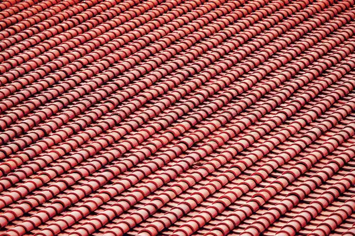

Focused arrival windows
Useful updates and clear arrival timing.

Roofing in Bayview is essential for maintaining the integrity of your home. Our expert team provides reliable roofing services in Bayview, ensuring your roof is in top condition. As a premier roof contractor in Bayview, we specialize in roof installations, repairs, and maintenance tailored to the unique needs of our community.
Useful updates and clear arrival timing.
Review the approach and price before deciding.
Equipped vehicles and respectful cleanup.
Neighbors serving neighbors with follow-through.
Roofing in Bayview is a vital service that ensures the safety and durability of your home. With over 15 years of experience, Roofing Contractor Florida has established a strong presence in Bayview, serving neighborhoods such as Bayview Park and Bayview Estates. Our commitment to quality and customer satisfaction sets us apart, making us the preferred roof contractor in Bayview. We offer a range of services, including roof repairs and installations, tailored to meet the specific needs of our community. The unique climate and building styles in Bayview require specialized knowledge, which our team possesses.

Roofing demand in Bayview is driven by the area's unique climate and building styles. Our team offers a wide range of roofing services in Bayview, including emergency roofing repairs and regular maintenance. We provide 24/7 roofing services in Bayview to ensure that your home is protected at all times.
Our roof installation services in Bayview cater to various building types, ensuring that each roof is tailored to withstand local weather conditions. We use high-quality materials, including asphalt shingles and metal sheets, to provide durable solutions.
View service →02Roof replacement in Bayview is essential for homes with aging roofs. Our team assesses each situation and recommends the best materials and techniques to ensure longevity and compliance with local codes.
View service →03We offer comprehensive roof repair services in Bayview, addressing issues like leaks, missing shingles, and flashing problems. Our experienced team quickly identifies problems and provides effective solutions.
View service →04Regular roof inspections in Bayview help prevent major issues. Our team conducts thorough inspections to identify potential problems before they escalate, ensuring your roof remains in good condition.
View service →05Routine roof maintenance in Bayview is crucial for prolonging the life of your roof. Our maintenance plans include cleaning, inspections, and repairs to keep your roof functioning optimally.
View service →06Our flat roofing services in Bayview are perfect for commercial buildings and modern homes. We use high-quality materials and techniques to ensure durability and weather resistance.
View service →07Shingle roofing services in Bayview offer homeowners a range of aesthetic options. We provide installations and repairs using top brands like GAF and Owens Corning for reliable performance.
View service →08Tile roofing services in Bayview provide a classic look with exceptional durability. Our team specializes in tile installations that comply with Florida Building Code standards.
View service →09Metal roofing services in Bayview offer superior durability and energy efficiency. Our expert team installs metal roofs that withstand the local climate while providing long-lasting protection.
View service →Roofing in Bayview requires a deep understanding of local building codes and weather patterns. Our team is familiar with the Florida Building Code Compliance, ensuring all work meets legal requirements. We use high-quality materials, including GAF shingles and Owens Corning products, to guarantee durability. Our scheduling is flexible, accommodating both routine and emergency services. Parking and access are planned in advance to minimize disruption to your neighborhood.
These conditions can lead to roof leaks and accelerated wear on roofing materials. Our team uses weather-resistant materials and offers regular maintenance to mitigate these issues.
Older homes may require specialized repair techniques and materials to maintain their character. We assess each roof individually and provide tailored solutions that respect the home's architecture.
Compliance with local codes can complicate roofing projects, especially for renovations. Our team is well-versed in local regulations, ensuring all work is compliant and hassle-free.
This code dictates the standards for roofing materials and installation methods, ensuring safety and durability.
Following NRCA guidelines ensures our roofing practices meet industry standards for quality and safety.
Bayview's unique climate and building styles lead to specific roofing challenges. Understanding these common problems can help homeowners address them early.
Frequent heavy rains can overwhelm older roofing systems, leading to leaks and water damage. Our team conducts thorough inspections and uses high-quality materials to ensure roofs can withstand local weather.
High humidity and temperature fluctuations can cause shingles to curl and lose their protective qualities. We recommend regular maintenance and inspections to catch these issues early and replace damaged shingles promptly.
Inadequate ventilation can trap heat in the attic, damaging roofing materials and increasing energy costs. Our team assesses ventilation systems and recommends solutions to improve airflow and reduce heat buildup.
Bayview is prone to storms, which can cause shingles to lift or become damaged, exposing the roof to leaks. We offer emergency storm damage repairs and use durable materials to withstand high winds.

Roofing pricing in Bayview typically ranges from $180 to $450 per square for installations and repairs. Factors such as roof size, materials used, and complexity of the job can influence costs. Our team provides detailed estimates to ensure transparency in pricing.
Larger roofs require more materials and labor, increasing overall costs. We provide accurate measurements to ensure fair pricing.
Higher quality materials, such as metal or tile, may cost more upfront but offer better durability and longevity, making them a worthwhile investment.
Complex roofing designs or repairs may require more skilled labor, which can affect the overall cost of the project.
Navigating Bayview is easy with its notable landmarks. Our team uses these landmarks for efficient routing and service delivery.
This central hub is a key location for community events, making it a familiar spot for our team.
This park is a popular gathering place, and our team often services homes in its vicinity.
Located near the water, this area presents unique roofing challenges due to humidity and salt exposure.
This commercial area is bustling and often requires roofing services for local businesses.
Nearby schools are important for community ties, and we often provide services to local families.
The library is a local landmark, and our team frequently works with residents in this area.
This commercial area experiences high demand for roofing services due to its many businesses.
The shopping center's diverse businesses often require regular roofing maintenance and repair.
Easily accessible via Bayview Highway, allowing for quick travel to service calls.
Located centrally, making it convenient for our team to reach various neighborhoods.
We proudly serve several neighborhoods in Bayview, each with its unique roofing needs. Our team is familiar with the local architecture and climate, ensuring we provide tailored services.
Bayview Park features a mix of older and newer homes, requiring both restoration and modern roofing solutions. Our team can respond quickly, often within 30 minutes.
Bayview Estates is known for its spacious homes and unique roofing styles, necessitating expert installation and repair services. We are just a short drive away, ensuring prompt service.
Hiland Park has many homes with flat roofs, which require specialized maintenance and repair techniques. Our team is familiar with the area, allowing for quick response times.
Pretty Bayou's waterfront properties face unique weather challenges, making regular inspections and repairs essential. We prioritize this area for immediate service calls.
Here are some examples of our successful roofing projects in Bayview, showcasing our expertise and commitment to quality.
Severe storm damage to a residential roof in Bayview Park. We conducted an emergency inspection and replaced damaged shingles with high-quality GAF materials, ensuring compliance with local codes. The homeowner was pleased with the swift response and quality of work, restoring their roof within 48 hours.
Leaking roof in a commercial building at Bayview Plaza. Our team identified flashing issues and replaced it with durable materials, effectively sealing the leaks. The business owner reported no further leaks and appreciated our timely service during business hours.
Moss growth on a residential roof in Pretty Bayou. We performed a thorough cleaning and applied a protective coating to prevent future growth. The homeowner was satisfied with the results and noted improved roof aesthetics.
Bayview's climate influences the demand for roofing services throughout the year. Understanding these seasonal considerations can help homeowners plan.
Spring often brings heavy rains, increasing the risk of leaks and water damage. Regular inspections are crucial during this time.
Summer heat can lead to shingle deterioration and increased cooling costs. Proper ventilation is essential.
Fall brings falling leaves, which can clog gutters and lead to water damage if not addressed.
Winter storms can cause ice dams and snow accumulation, leading to potential leaks and roof damage.
From Bayview, we proudly extend our roofing services to several nearby cities, ensuring comprehensive coverage for our clients.

St. Andrews is just a short drive from Bayview, making it convenient for our team to provide services.
Local coverage and details
Downtown Panama City is nearby, and we frequently serve clients in this bustling area.
Local coverage and details
Millville is close to Bayview, allowing for quick response times for roofing needs.
Local coverage and details
Downtown North is a short distance from Bayview, where we offer our roofing services.
Local coverage and detailsWhen hiring a roofing contractor in Bayview, it's essential to ask the right questions to ensure quality service. Here are key inquiries to consider.
The answer reveals the contractor's knowledge of local conditions and suitability for your specific roof.
This ensures that the contractor meets legal requirements and provides protection for both parties.
References offer insight into the contractor's work quality and customer satisfaction.
Understanding the timeline helps you plan accordingly and sets expectations for completion.
A warranty indicates the contractor's confidence in their work and provides peace of mind for the homeowner.
Lic. #FL123456
Lic. #FL654321
GAF
CertainTeed
$2M general liability
member
sponsor
The best roofing services in Bayview include roof repairs, installations, and maintenance tailored to the local climate and building styles.
Roofing costs in Bayview typically range from $180 to $450 per square, depending on materials and project complexity.
Look for a licensed, insured contractor with local experience, positive reviews, and a clear understanding of your roofing needs.
A roof installation in Bayview typically takes 1-3 days, depending on the size and complexity of the project.
Call a roof contractor in Bayview when you notice leaks, missing shingles, or other signs of damage to ensure timely repairs.
Not seeing your question? Our local team can help you understand urgency, scheduling and what to expect.
Ask the local team
We invite you to reach out for any roofing needs. Our team is available to assist you promptly, ensuring a quick response.